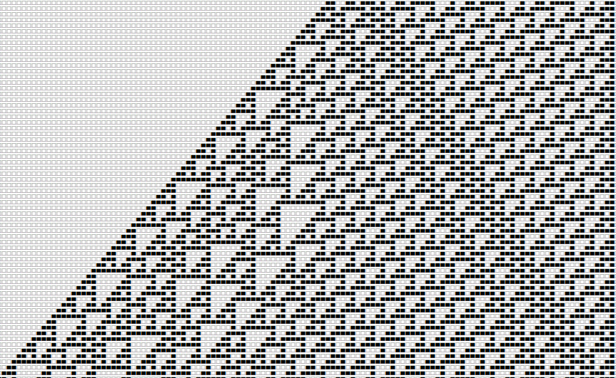
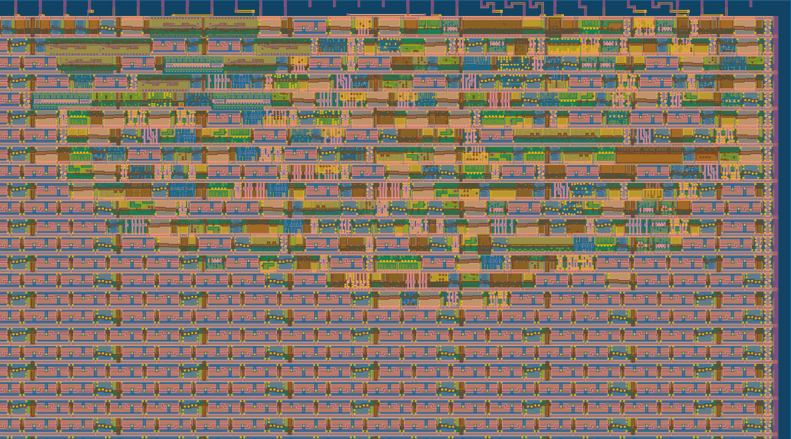
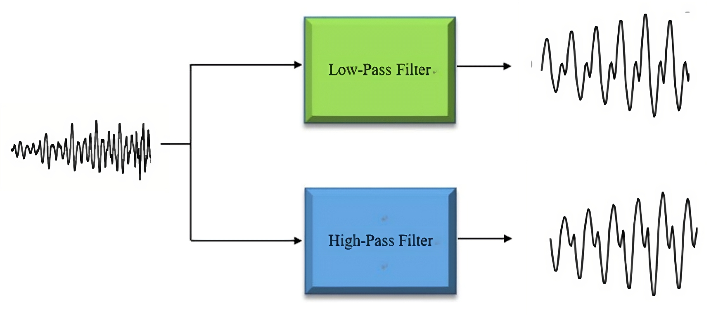
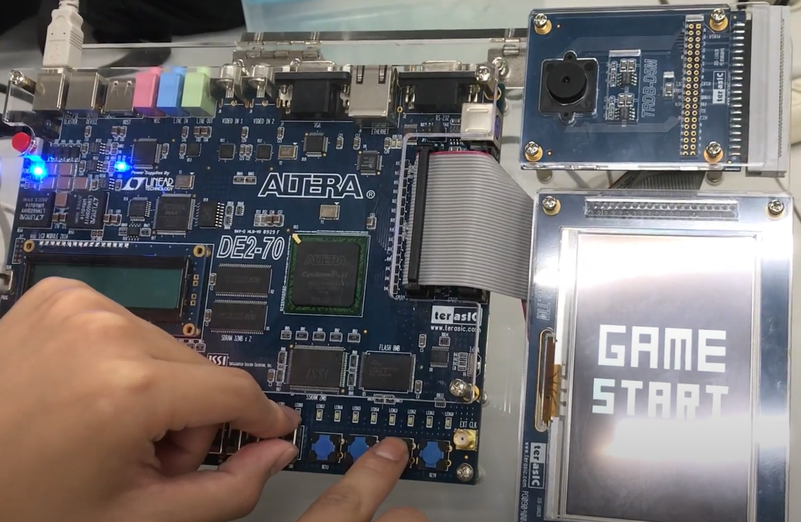

My Work & Projects

Floating Point Multiplier
用Verilog實現IEEE Standard 754的雙精度浮點數相乘器，並且經過Synthesis、APR、DRC/LVS得到最終的電路佈局圖。

Tiny Tapeout Rule110 cellular automaton
參與使用skywater 130nm製程的Tiny Tapeout 5 計畫，並提交具有256個細胞的Rule110細胞自動機。

Tiny Tapeout 4bits ALU
參與使用skywater 130nm製程的Tiny Tapeout 5 計畫，並提交運算速度50MHz且具有16個運算功能的4bits ALU。

FIR Filter
LTI系統下的fixed-point FIR Filter電路實現，透過組合移位暫存器、乘法器、加法器電路實現一個高通濾波器和一個低通濾波器。


FPGA簡易版推方塊小遊戲
使用FPGA(Altera DE2-70)開發版實作簡易版的推方塊小遊戲，並展示實際遊玩的影片在YouTube上。
Vivado Installation Guide
完整的Vivado 2023.1版本在Windows下的安裝流程教學，一步步帶你完成Vivado軟體下載、安裝和License的申請及認證。